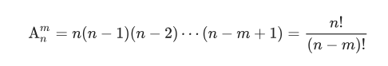
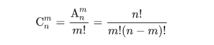
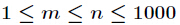
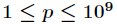
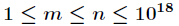
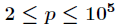

组合数¶
组合数取模¶
排列计算
组合计算 
特别的 m>n时， A_n^m=C_n^m=0
方案1 杨辉三角 二重循环¶
,
1
1 1
1 2 1
1 3 3 1
C_n^m =\left\{ \begin{aligned} 1& &m=0\\ C_{n-1}^{m-1}+C_{n-1}^{m}& &0<m<n\\ 1& &m=n\\ \end{aligned} \right.
方案2 阶乘预处理¶
1<=m,n<=1e5，1<=p<=1e9
打出n!\bmod p,m!\bmod p的表，然后直接拿来计算
不取模的运算¶
1 2 3 4 | ll C(ll n, ll m){ if(m>n) return 0; return fac[n]/(fac[n-m]*fac[m]); } |
取模的运算¶
我们知道除法并不满足同余定理，所以用乘法逆元做处理
C_n^m\bmod p=\frac{n!}{m!(n-m)!} \bmod p= n!*(m!)'*((n-m)!)' \pmod p
1 2 3 4 | ll C(ll n, ll m, ll p){ if(m==0) return 1; return fac[n] * inv(fac[n-m],p)%p * inv(fac[m],p)%p; } |
方案3 Lucas定理¶
，，其中 p 必须为素数
1 2 3 4 | long long Lucas(long long n, long long m, long long p) { if (m == 0) return 1; return (C(n % p, m % p, p) * Lucas(n / p, m / p, p)) % p; } |
Lucas定理¶
Lucas 定理用于求解大组合数取模的问题，其中 p 必须为素数
C_n^m \bmod p = C_{\lfloor n/p \rfloor}^{\lfloor m/p \rfloor}*C_{n \bmod p}^{m \bmod p} \bmod p，\lfloor x \rfloor代表向下取整
观察上述表达式，可知 n\bmod p 和 m \bmod p 一定小于 p ，可以直接求解，$ C_{\lfloor n/p \rfloor}^{\lfloor m/p \rfloor}$ 可以继续用Lucas定理求解。边界条件：当 m=0 时，返回 1。
时间复杂度为O(f(p)+g(n)log n) ，其中f(n)为预处理组合数的复杂度， g(n)为单次求组合数的复杂度。